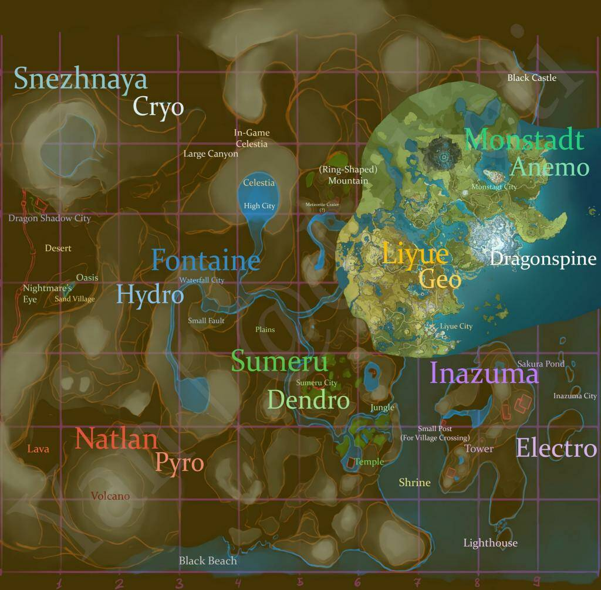
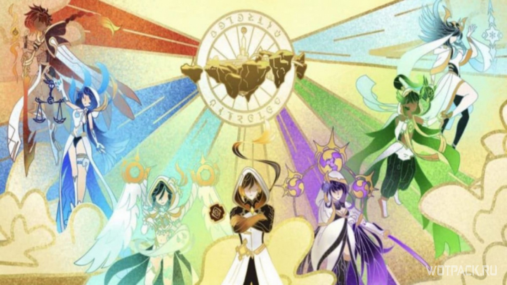

Привет! Ты попал(а) на фан сайт по регионам игры Genshin impact
Здесь я расскажу о семи регионах Тейвата
- Мондштадт 
- Ли Юэ
- Инадзума
- Сумеру
- Натлан
-Фонтейн
-Снежная
Архонты
Регионами управляют архонты. Архонт- божество владеющее своей земельной единицей. Земли поделены между семью архонтами после их войны. Всего из семеро:
 -Венти (Мондштадт)
-Чжун ли (Ли Юэ)
-Сёгун Райден (Инадзума)
-Нахида (Сумеру)
-Мулата (Натлан)
-Фокалорс (Фонтейн)
-Царица(Снежная)
Меню